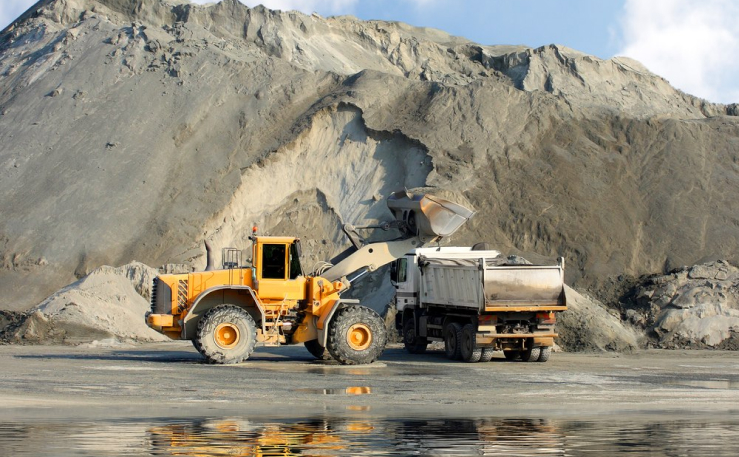

Наши услуги
МФЦА – это уникальный центр, который использует лучшие практики и подходы международных финансовых центров и
сотрудничает с крупными корпорациями
и небольшими компаниями, недавно появившимися на рынке.

Буровые работы
Мinerals Operating – это молодая компания, которая оказывает услуги в сфере недропользования на территории Казахстана. Мы одна из первых компаний являющихся лицензированным консультантом в сфере минеральных ресурсов (лицензия №AFSA-A-LA-2020-0004). Мinerals Operating зарегистрирована в Международном Финансовом Центре «Астана» (МФЦА) и осуществляет деятельность, основанную на нормах и принципах Английского общего права. МФЦА – это уникальный центр, который использует лучшие практики и подходы международных финансовых центров и сотрудничает с крупными корпорациями и небольшими компаниями, недавно появившимися на рынке.
Подробнее об услугеГеологоразведочные работы
Мinerals Operating – это молодая компания, которая оказывает услуги в сфере недропользования на территории Казахстана. Мы одна из первых компаний являющихся лицензированным консультантом в сфере минеральных ресурсов (лицензия №AFSA-A-LA-2020-0004). Мinerals Operating зарегистрирована в Международном Финансовом Центре «Астана» (МФЦА) и осуществляет деятельность, основанную на нормах и принципах Английского общего права. МФЦА – это уникальный центр, который использует лучшие практики и подходы международных финансовых центров и сотрудничает с крупными корпорациями и небольшими компаниями, недавно появившимися на рынке.
Подробнее об услуге

Научно-исследовательские работы
Мinerals Operating – это молодая компания, которая оказывает услуги в сфере недропользования на территории Казахстана. Мы одна из первых компаний являющихся лицензированным консультантом в сфере минеральных ресурсов (лицензия №AFSA-A-LA-2020-0004). Мinerals Operating зарегистрирована в Международном Финансовом Центре «Астана» (МФЦА) и осуществляет деятельность, основанную на нормах и принципах Английского общего права. МФЦА – это уникальный центр, который использует лучшие практики и подходы международных финансовых центров и сотрудничает с крупными корпорациями и небольшими компаниями, недавно появившимися на рынке.
Подробнее об услугеОпытно-конструкторские работы
Мinerals Operating – это молодая компания, которая оказывает услуги в сфере недропользования на территории Казахстана. Мы одна из первых компаний являющихся лицензированным консультантом в сфере минеральных ресурсов (лицензия №AFSA-A-LA-2020-0004). Мinerals Operating зарегистрирована в Международном Финансовом Центре «Астана» (МФЦА) и осуществляет деятельность, основанную на нормах и принципах Английского общего права. МФЦА – это уникальный центр, который использует лучшие практики и подходы международных финансовых центров и сотрудничает с крупными корпорациями и небольшими компаниями, недавно появившимися на рынке.
Подробнее об услуге

Геофизические исследования
Мinerals Operating – это молодая компания, которая оказывает услуги в сфере недропользования на территории Казахстана. Мы одна из первых компаний являющихся лицензированным консультантом в сфере минеральных ресурсов (лицензия №AFSA-A-LA-2020-0004). Мinerals Operating зарегистрирована в Международном Финансовом Центре «Астана» (МФЦА) и осуществляет деятельность, основанную на нормах и принципах Английского общего права. МФЦА – это уникальный центр, который использует лучшие практики и подходы международных финансовых центров и сотрудничает с крупными корпорациями и небольшими компаниями, недавно появившимися на рынке.
Подробнее об услугеПроектирование горных производств
Мinerals Operating – это молодая компания, которая оказывает услуги в сфере недропользования на территории Казахстана. Мы одна из первых компаний являющихся лицензированным консультантом в сфере минеральных ресурсов (лицензия №AFSA-A-LA-2020-0004). Мinerals Operating зарегистрирована в Международном Финансовом Центре «Астана» (МФЦА) и осуществляет деятельность, основанную на нормах и принципах Английского общего права. МФЦА – это уникальный центр, который использует лучшие практики и подходы международных финансовых центров и сотрудничает с крупными корпорациями и небольшими компаниями, недавно появившимися на рынке.
Подробнее об услуге

Природоохранное проектирование
Мinerals Operating – это молодая компания, которая оказывает услуги в сфере недропользования на территории Казахстана. Мы одна из первых компаний являющихся лицензированным консультантом в сфере минеральных ресурсов (лицензия №AFSA-A-LA-2020-0004). Мinerals Operating зарегистрирована в Международном Финансовом Центре «Астана» (МФЦА) и осуществляет деятельность, основанную на нормах и принципах Английского общего права. МФЦА – это уникальный центр, который использует лучшие практики и подходы международных финансовых центров и сотрудничает с крупными корпорациями и небольшими компаниями, недавно появившимися на рынке.
Подробнее об услугеКонсалтинговые услуги
Мinerals Operating – это молодая компания, которая оказывает услуги в сфере недропользования на территории Казахстана. Мы одна из первых компаний являющихся лицензированным консультантом в сфере минеральных ресурсов (лицензия №AFSA-A-LA-2020-0004). Мinerals Operating зарегистрирована в Международном Финансовом Центре «Астана» (МФЦА) и осуществляет деятельность, основанную на нормах и принципах Английского общего права. МФЦА – это уникальный центр, который использует лучшие практики и подходы международных финансовых центров и сотрудничает с крупными корпорациями и небольшими компаниями, недавно появившимися на рынке.
Подробнее об услугеПо всем вопросам info@moperating.kz